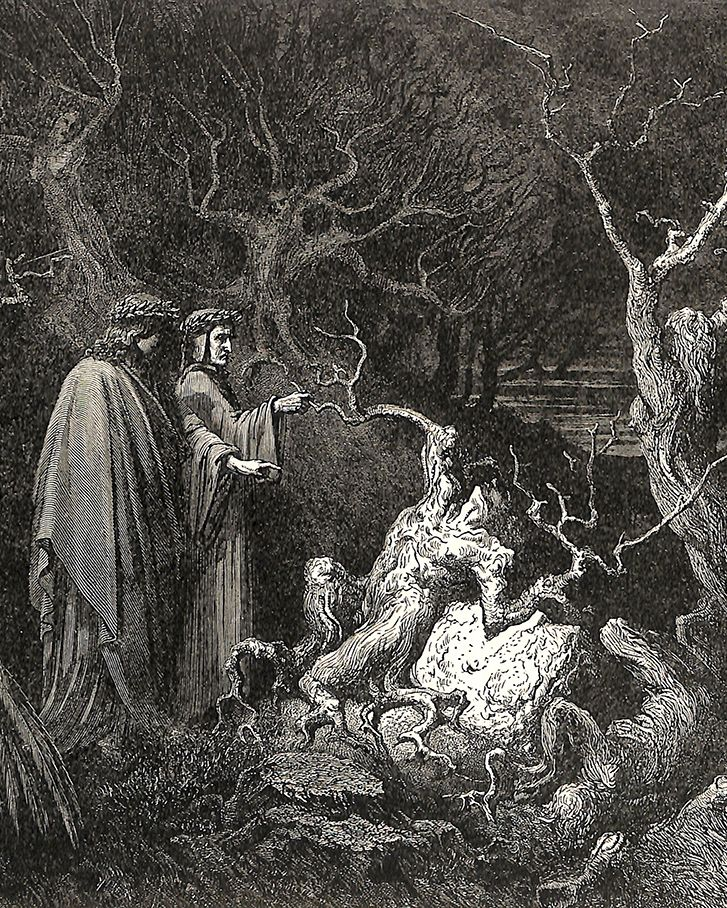

Dante e Virgilio entrano nel secondo girone del settimo cerchio: una fitta e spaventosa selva di alberi intricati dove nidiificano le Arpie. Qui sono puniti i suicidi, trasformati in piante poiché in vita rinunciarono al proprio corpo. Dante spezza un ramo e ne escono sangue e parole: è l'anima di Pier della Vigna, segretario di Federico II, che proclama la sua innocenza dall'accusa di tradimento. Nel medesimo girone corrono gli scialacquatori, inseguiti e sbranati da cagne feroci per aver distrutto con violenza i propri beni.
I poeti giungono nel terzo girone, una landa di sabbia infuocata sotto una pioggia di fiamme, dove sono puniti i violenti contro Dio, natura e arte. Tra i bestemmiatori, Dante incontra il gigante Capaneo, che mantiene intatta la sua superbia e il disprezzo verso la divinità nonostante il tormento. Virgilio spiega poi l'origine dei fiumi infernali, che nascono dalle lacrime del Veglio di Creta, una colossale statua che rappresenta la decadenza dell'umanità attraverso i metalli di cui è composta, dal prezioso oro al fragile ferro.
